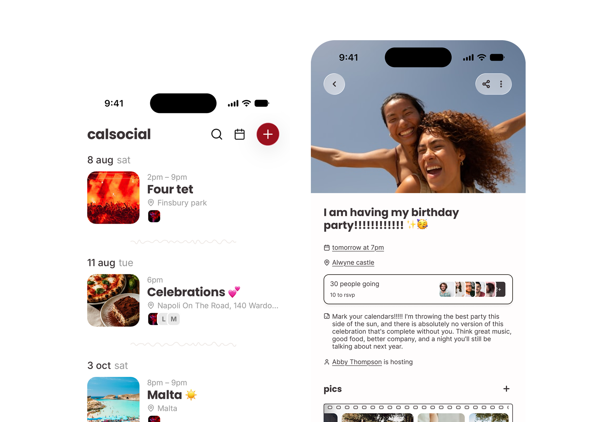
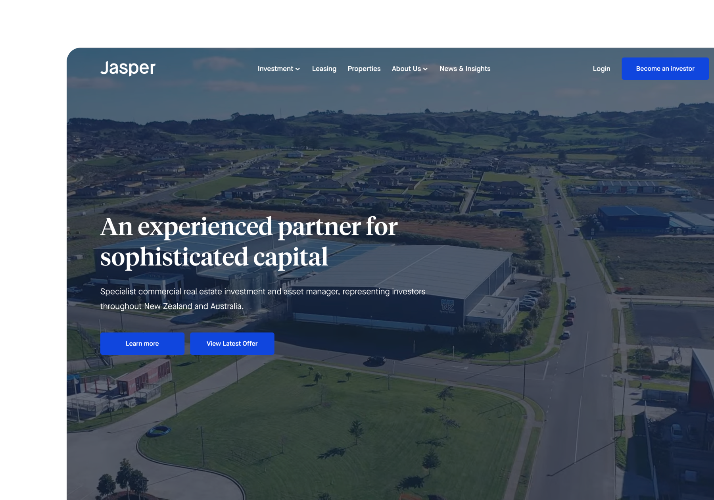
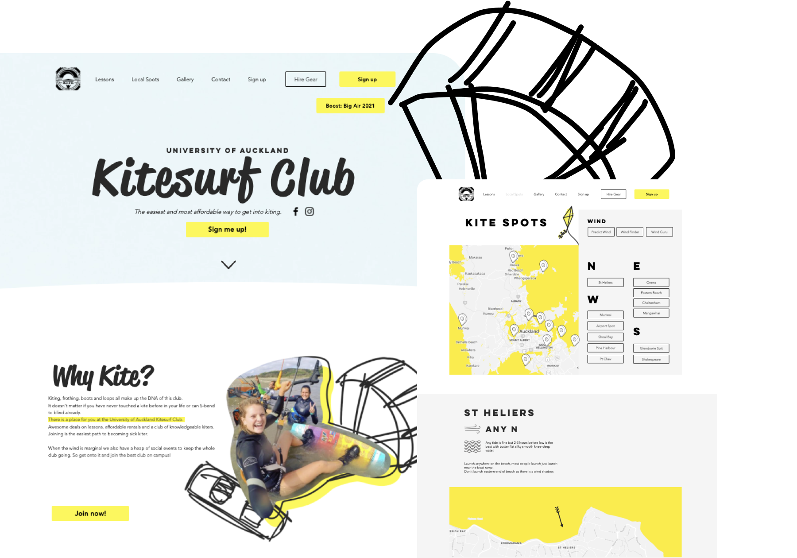
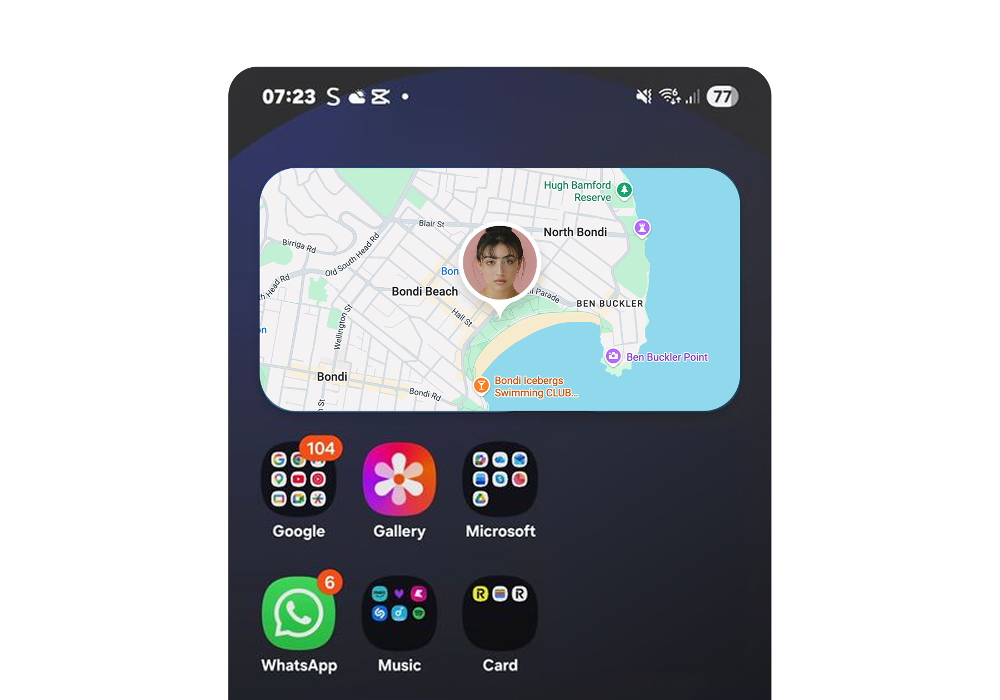
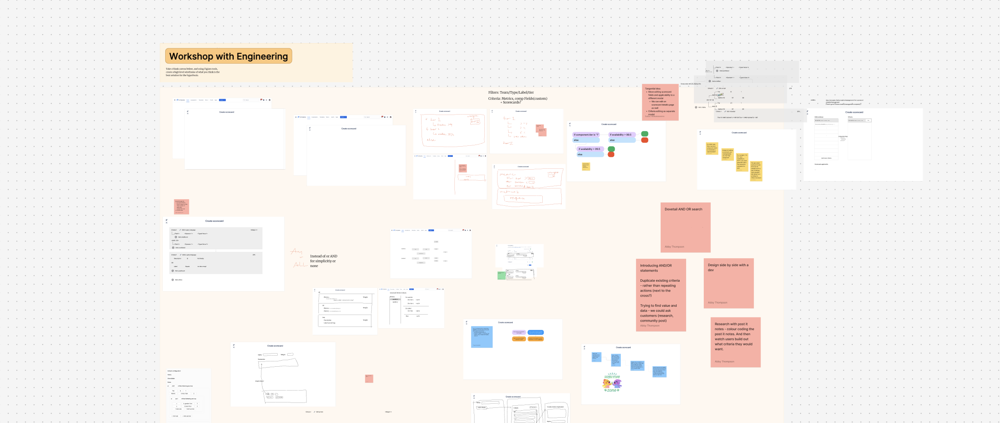

Rebuilt the request page around real user research, prioritising what negotiators actually need to see and cutting approval time
Shipped a fresher, easier-to-use UI that helped power a record sales quarter, with customers consistently telling sales and solutions it's a step above competitor tools
A friends-first social calendar that pulls event planning out of chaotic group chats
Leading a full visual and UX refresh to boost early adoption and retention

Joined November 2020
Designed and developed the customer, admin, and marketing experiences
Built the platform wholesale CRE investors use instead of spreadsheets

Kitesurf club
Club president in 2017
Designed and built the club's site from scratch; sign-ups, kite-spot maps, the works
Membership grew 35% (153 → 207) the year after launch

Interned 2017
Built an Android widget for sharing live location in Google Maps

Atlassian · Compass
Software Goals
Product Designer · PM, EM & 12 engineers
I led design on Software Goals, a new framework inside Compass for defining and tracking engineering-health improvement work. It grew to 276 engaged teams with a 57.9% awareness-to-engagement conversion rate, and became the internal proof point for a feature Atlassian later took to customers.
Context
Compass is Atlassian's catalog for every software component in the company: every microservice, every library, tracked in one place. Our Engineering Health team used it to try to lift the quality of that software across the org, but had no systematic way to define, track, or report on that work.
The problem
No standard way for teams to define, track, or report on engineering improvement work
No consolidated view for leadership or non-technical PMs, just ad-hoc reporting
Manual data collection that made it hard to drive improvements at scale
External Compass customers had described the same problem. Solving it internally meant we were also prototyping a future customer-facing feature.
Constraints
Designing for two audiences at once: engineers who'd live in this daily, and leadership who'd only ever see a summary
No mandate to force adoption: 12 teams already had their own workarounds, so the feature had to earn trust rather than just exist
An internal experiment with external stakes: decisions here were likely to become the template for a customer-facing feature later
Process
Before any UI, I mapped how the two team types (teams who own a goal and teams who contribute to one) actually experienced the current manual process, and worked with engineering to define what a "Goal" needed to be as a data object so progress could sync cleanly across Compass and Atlassian Home.
Driver vs. receiving team journeys: where the manual process broke down for eachModeling "Goal" as an object so progress could sync across Compass, Home, and reporting

Working sessions with engineering: designing the data model and the interface together, not in sequence
An early version of the flow only let a team pass or fail a goal outright. In working sessions it became clear teams needed a way to flag legitimate blockers instead of failing silently. That became the exemption workflow in the shipped version.
The solution
Centralised goal definition & visibility. The Engineering Health team could define and publish standardised goals in Compass, with key metrics tracked automatically. For stakeholders who didn't live in Compass, progress summaries surfaced in Atlassian Home.
Team-level tracking & accountability. Teams could monitor their own progress, understand their status, and request an exemption with justification when a goal genuinely didn't apply, balancing accountability with room for real context.
Impact
276teams engaged
57.9%awareness → engagement conversion
2.5xlift in Health Details views
That uptake validated Software Goals as a real solution for operationalising software health internally, paving the way for its external rollout.
What I'd do differently
I'd instrument team-level engagement from day one rather than leaning on leadership-facing view counts. The 2.5x lift told us leadership was paying attention, but it took longer than it should have to see which teams were quietly disengaged versus genuinely blocked.
Want the full story: rollout sequencing, who we had to convince, what broke along the way?
Vertice helps companies buy and renew software at the best price, saving them millions. The platform centres on two core objects, contracts and new purchase requests, and the request page carries both renewals and new software requests through the workflow. I led its redesign, lifting CSAT by 32% and cutting time to complete a request by 27%.
Context
The request page is critical to the Vertice experience: it supports both renewals and brand-new software requests. But the original design failed to support either use case effectively, putting SaaS platform adoption and CSAT at risk.
Role & team
Took ownership of the initiative within two weeks of joining Vertice
Partnered closely with Product, Engineering, and Data to define the problem space and align on success metrics
Led discovery across internal and external users to uncover friction in key workflows
Collaborated with 3 Product Managers and 3 engineering squads, plus Customer Success, Sales, and Data to validate solutions and measure impact
Process
Redesigning key pages
I led this initiative from week two after joining, working with Product, Engineering, and Data Science to understand the problem. I interviewed dozens of internal and external stakeholders to understand the pain points and desires of the primary users, then defined new components and patterns across the product.
Intermidiary stage of the page design: tasks, offers, and stakeholder communication in one view
Designing scalable components
I audited the existing UI to identify inconsistencies and duplication, then built a flexible component system to support multiple workflows and edge cases, balancing speed of delivery against long-term maintainability. Usage guidelines let designers and engineers build confidently and consistently from there.
Improving communication
I mapped stakeholder touchpoints across the end-to-end workflow, identified where handoffs between teams were breaking down, and simplified the information architecture to surface the right context at the right time. Clearer status visibility and structured updates cut down on ambiguity and back-and-forth.
Impact
32%increase in CSAT
-27%time to complete a request
41%improvement in task completion
Internal teams moved faster with clearer ownership and less back-and-forth. External users gained better visibility into their requests, reducing confusion and cutting support tickets. The redesigned experience drove higher engagement and stronger adoption across the platform.
What's next
The next focus is redesigning the contract page to align with the new request experience. Due to time constraints, some enhancements were intentionally scoped for a second phase. The contract page will extend the same patterns and components, keeping workflows consistent while cutting design and engineering duplication. This phase will:
Unify the experience across contracts and requests
Increase component reuse to improve development efficiency
Further streamline the user journey and reduce cognitive load
Want the full walkthrough: the component system, the stakeholder interviews, what's coming for contracts?